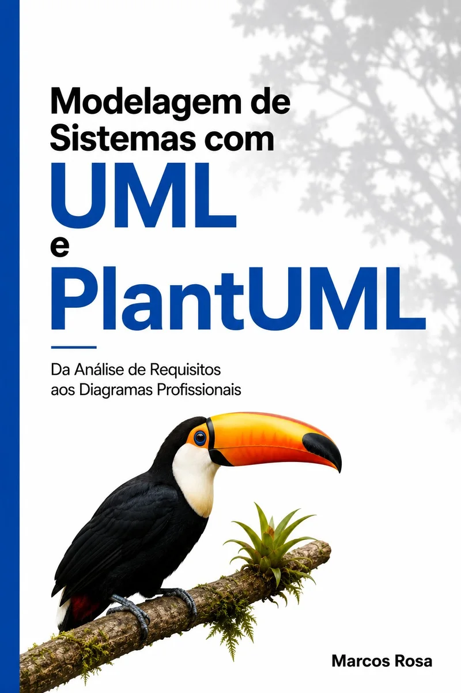

UML ePlantUML

Modelagem de Sistemas: da análise de requisitos aos diagramas profissionais.
Diagramas
como código
Compreender a modelagem, escrever o modelo e transformar o código em diagramas profissionais.
O livro apresenta o PlantUML de forma prática e progressiva, dos primeiros comandos à construção de modelos completos.
Você aprende a escrever diagramas como código, organizá-los, personalizá-los, visualizá-los e exportá-los, aproximando a modelagem das práticas de desenvolvimento de software. São quatro diagramas fundamentais: casos de uso, classes, atividades e sequência.
Neste livro
- 4 diagramas fundamentais da UML
- Exemplos práticos em PlantUML
- Diagramas versionados junto com o código
- Exercícios com resolução
- Cheat sheets para consulta rápida
Escreva,
veja
Os quatro diagramas do livro, lado a lado com o código que os gera. Escolha um tipo.
@startuml
actor Usuario
rectangle Sistema {
Usuario --> (Login)
Usuario --> (Consultar dados)
}
@enduml@startuml
class Livro {
- titulo: String
- autor: String
+ resumo(): String
}
class Capitulo {
- numero: int
- titulo: String
}
Livro "1" *-- "*" Capitulo
@enduml@startuml
actor Leitor
participant Site
participant Amazon
Leitor -> Site: escolhe o livro
activate Site
Site -> Amazon: abre a página
deactivate Site
Amazon --> Leitor: compra concluída
@enduml@startuml
start
:Ler o capítulo;
:Fazer os exercícios;
if (ok?) then (sim)
:Próximo capítulo;
else (não)
:Revisar exemplos;
endif
stop
@endumlO que você
aprende
Os conceitos de UML e os recursos do PlantUML para construir cada diagrama.
Casos de uso
2 temas
- Atores e relacionamentos
- Include, extend e generalização
Classes
3 temas
- Atributos, métodos e associações
- Multiplicidades, herança e interfaces
- Agregação e composição
Atividades
2 temas
- Decisões, repetições e paralelismo
- Partitions, groups e swimlanes
Sequência
2 temas
- Mensagens, ativações e retornos
- alt, opt, loop e par
Acabamento
3 temas
- Personalização dos diagramas
- Organização visual e boas práticas
- Erros comuns e referências rápidas
Para quem
é o livro
- Estudantes de Computação
- Profissionais de desenvolvimento
- Analistas de sistemas
- Professores
- Quem quer aprender UML na prática
Também para quem já conhece UML e quer usar PlantUML para criar, manter, versionar e reutilizar diagramas.
Feito para
praticar
Fundamentos de modelagem, código PlantUML, exercícios e recursos de consulta.
Exemplos práticos
Exemplos em PlantUML para acompanhar a construção de cada tipo de diagrama.
Exercícios
Atividades ao final dos capítulos para praticar a modelagem.
Personalização
Recursos para organizar e personalizar visualmente os diagramas.
Boas práticas
Como estruturar modelos e evitar os problemas mais comuns.
Referências rápidas
Cheat sheets para consultar comandos durante o trabalho.
Resolução dos exercícios
As respostas dos exercícios finais para consolidar o aprendizado.
Modele
hoje
Saia da teoria e use UML na prática, com um caminho estruturado dos primeiros conceitos aos modelos completos. Conheça Modelagem de Sistemas com UML e PlantUML — Da Análise de Requisitos aos Diagramas Profissionais.
Comprar na Amazon Você será direcionado para a Amazon Brasil.